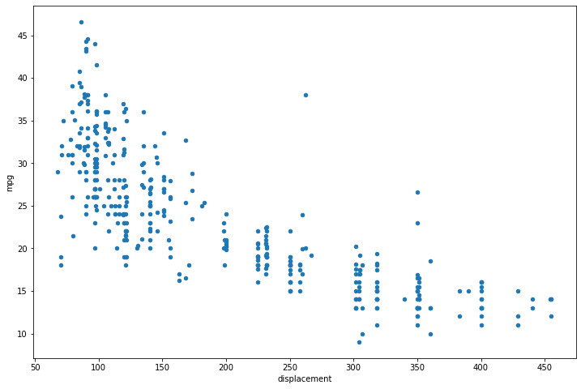
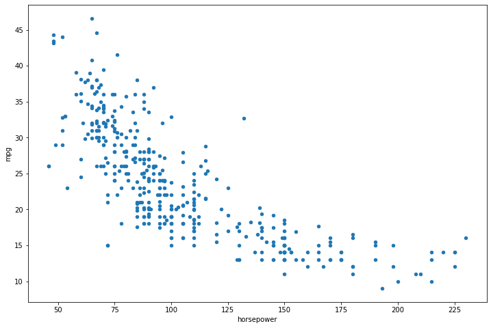
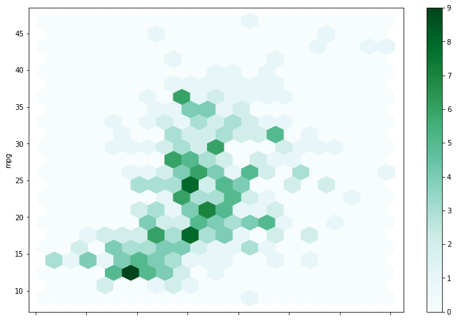
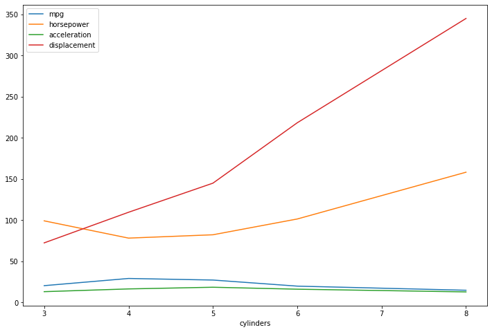
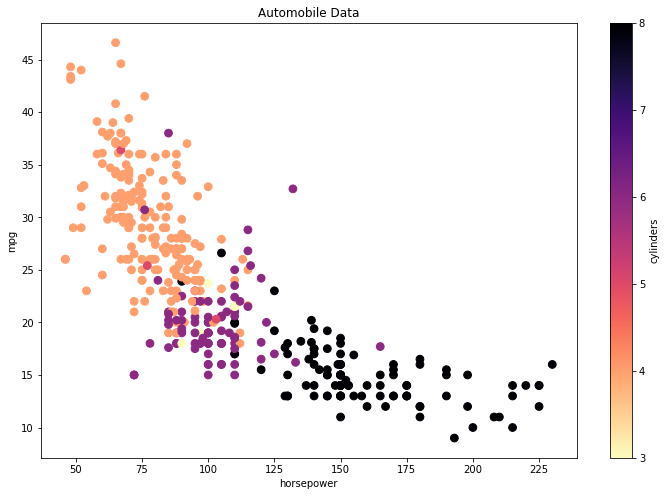
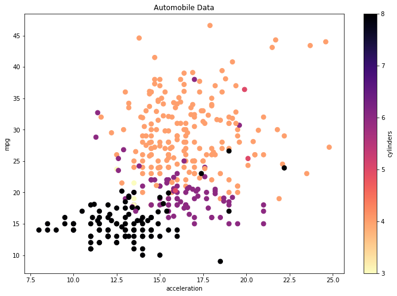
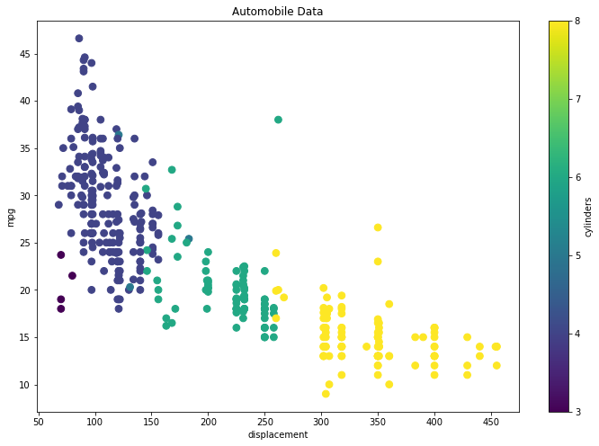
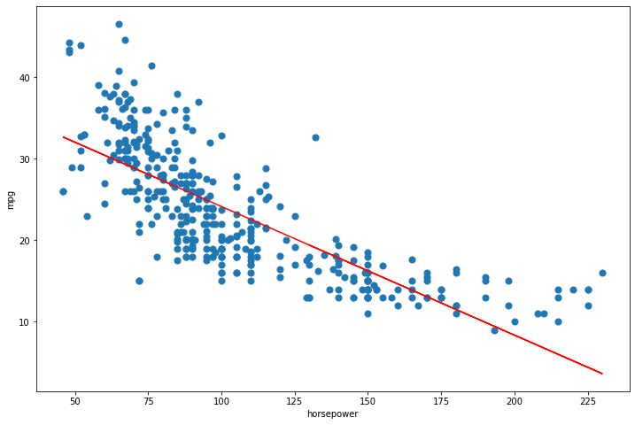

Bivariate Data¶
import numpy as np
import pandas as pd
import matplotlib.pyplot as plt
import seaborn as sns
Import Data¶
automobile_data = pd.read_csv('datasets/auto-mpg.csv')
automobile_data.head(10)
| mpg | cylinders | displacement | horsepower | weight | acceleration | model year | origin | car name | |
|---|---|---|---|---|---|---|---|---|---|
| 0 | 18.0 | 8 | 307.0 | 130 | 3504 | 12.0 | 70 | 1 | chevrolet chevelle malibu |
| 1 | 15.0 | 8 | 350.0 | 165 | 3693 | 11.5 | 70 | 1 | buick skylark 320 |
| 2 | 18.0 | 8 | 318.0 | 150 | 3436 | 11.0 | 70 | 1 | plymouth satellite |
| 3 | 16.0 | 8 | 304.0 | 150 | 3433 | 12.0 | 70 | 1 | amc rebel sst |
| 4 | 17.0 | 8 | 302.0 | 140 | 3449 | 10.5 | 70 | 1 | ford torino |
| 5 | 15.0 | 8 | 429.0 | 198 | 4341 | 10.0 | 70 | 1 | ford galaxie 500 |
| 6 | 14.0 | 8 | 454.0 | 220 | 4354 | 9.0 | 70 | 1 | chevrolet impala |
| 7 | 14.0 | 8 | 440.0 | 215 | 4312 | 8.5 | 70 | 1 | plymouth fury iii |
| 8 | 14.0 | 8 | 455.0 | 225 | 4425 | 10.0 | 70 | 1 | pontiac catalina |
| 9 | 15.0 | 8 | 390.0 | 190 | 3850 | 8.5 | 70 | 1 | amc ambassador dpl |
automobile_data.shape
(398, 9)
automobile_data = automobile_data.replace('?', np.nan)
automobile_data = automobile_data.dropna()
automobile_data.shape
(392, 9)
automobile_data.drop(['origin', 'car name'], axis=1, inplace=True)
automobile_data.head()
| mpg | cylinders | displacement | horsepower | weight | acceleration | model year | |
|---|---|---|---|---|---|---|---|
| 0 | 18.0 | 8 | 307.0 | 130 | 3504 | 12.0 | 70 |
| 1 | 15.0 | 8 | 350.0 | 165 | 3693 | 11.5 | 70 |
| 2 | 18.0 | 8 | 318.0 | 150 | 3436 | 11.0 | 70 |
| 3 | 16.0 | 8 | 304.0 | 150 | 3433 | 12.0 | 70 |
| 4 | 17.0 | 8 | 302.0 | 140 | 3449 | 10.5 | 70 |
automobile_data['model year'] = '19' + automobile_data['model year'].astype(str)
automobile_data.sample(5)
| mpg | cylinders | displacement | horsepower | weight | acceleration | model year | |
|---|---|---|---|---|---|---|---|
| 388 | 26.0 | 4 | 156.0 | 92 | 2585 | 14.5 | 1982 |
| 125 | 20.0 | 6 | 198.0 | 95 | 3102 | 16.5 | 1974 |
| 322 | 46.6 | 4 | 86.0 | 65 | 2110 | 17.9 | 1980 |
| 356 | 32.4 | 4 | 108.0 | 75 | 2350 | 16.8 | 1981 |
| 346 | 32.3 | 4 | 97.0 | 67 | 2065 | 17.8 | 1981 |
import datetime
automobile_data['age'] = datetime.datetime.now().year - \
pd.to_numeric(automobile_data['model year'])
automobile_data.drop(['model year'], axis=1, inplace=True)
automobile_data.sample(5)
| mpg | cylinders | displacement | horsepower | weight | acceleration | age | |
|---|---|---|---|---|---|---|---|
| 278 | 31.5 | 4 | 89.0 | 71 | 1990 | 14.9 | 42 |
| 213 | 13.0 | 8 | 350.0 | 145 | 4055 | 12.0 | 44 |
| 316 | 19.1 | 6 | 225.0 | 90 | 3381 | 18.7 | 40 |
| 91 | 13.0 | 8 | 400.0 | 150 | 4464 | 12.0 | 47 |
| 215 | 13.0 | 8 | 318.0 | 150 | 3755 | 14.0 | 44 |
automobile_data.dtypes
mpg float64
cylinders int64
displacement float64
horsepower object
weight int64
acceleration float64
age int64
dtype: object
automobile_data['horsepower'] = pd.to_numeric(automobile_data['horsepower'], errors='coerce')
automobile_data.describe()
| mpg | cylinders | displacement | horsepower | weight | acceleration | age | |
|---|---|---|---|---|---|---|---|
| count | 392.000000 | 392.000000 | 392.000000 | 392.000000 | 392.000000 | 392.000000 | 392.000000 |
| mean | 23.445918 | 5.471939 | 194.411990 | 104.469388 | 2977.584184 | 15.541327 | 44.020408 |
| std | 7.805007 | 1.705783 | 104.644004 | 38.491160 | 849.402560 | 2.758864 | 3.683737 |
| min | 9.000000 | 3.000000 | 68.000000 | 46.000000 | 1613.000000 | 8.000000 | 38.000000 |
| 25% | 17.000000 | 4.000000 | 105.000000 | 75.000000 | 2225.250000 | 13.775000 | 41.000000 |
| 50% | 22.750000 | 4.000000 | 151.000000 | 93.500000 | 2803.500000 | 15.500000 | 44.000000 |
| 75% | 29.000000 | 8.000000 | 275.750000 | 126.000000 | 3614.750000 | 17.025000 | 47.000000 |
| max | 46.600000 | 8.000000 | 455.000000 | 230.000000 | 5140.000000 | 24.800000 | 50.000000 |
automobile_data.to_csv('datasets/automobile_data_processed.csv', index=False)
!ls datasets/
500_Person_Gender_Height_Weight_Index.csv mall_data_index_oriented.json
automobile_data_processed.csv mall_data_processed.csv
auto-mpg.csv mall_data_records_oriented.json
house_data_processed.csv mall_data_values_oriented.json
HousingData.csv Salary_Data.csv
Mall_Customers.json sp500_1987.csv
mall_data_column_oriented.json weight-height.csv
Bivariate data analysis¶
automobile_data.plot.scatter(x='displacement', y='mpg', figsize=(12, 8))
plt.show()

automobile_data.plot.scatter(x='horsepower', y='mpg', figsize=(12, 8))
plt.show()

automobile_data.plot.hexbin(x='acceleration', y='mpg', gridsize=20, figsize=(12, 8))
plt.show()

automobile_grouped = automobile_data.groupby(['cylinders']).mean()[['mpg', 'horsepower',
'acceleration', 'displacement']]
automobile_grouped
| mpg | horsepower | acceleration | displacement | |
|---|---|---|---|---|
| cylinders | ||||
| 3 | 20.550000 | 99.250000 | 13.250000 | 72.500000 |
| 4 | 29.283920 | 78.281407 | 16.581910 | 109.670854 |
| 5 | 27.366667 | 82.333333 | 18.633333 | 145.000000 |
| 6 | 19.973494 | 101.506024 | 16.254217 | 218.361446 |
| 8 | 14.963107 | 158.300971 | 12.955340 | 345.009709 |
automobile_grouped.plot.line(figsize=(12, 8))
plt.show()

Multivariate data analysis¶
fig, ax = plt.subplots()
automobile_data.plot(x='horsepower', y='mpg',
kind='scatter', s=60, c='cylinders',
cmap='magma_r', title='Automobile Data',
figsize=(12, 8), ax=ax)
plt.show()

fig, ax = plt.subplots()
automobile_data.plot(x='acceleration', y='mpg',
kind='scatter', s=60, c='cylinders',
cmap='magma_r', title='Automobile Data',
figsize=(12, 8), ax=ax)
plt.show()

fig, ax = plt.subplots()
automobile_data.plot(x='displacement', y='mpg',
kind='scatter', s=60, c='cylinders',
cmap='viridis', title='Automobile Data',
figsize=(12, 8), ax=ax)
plt.show()

automobile_data['acceleration'].cov(automobile_data['mpg'])
9.115514379664912
automobile_data['acceleration'].corr(automobile_data['mpg'])
0.4233285369027874
automobile_data['horsepower'].cov(automobile_data['mpg'])
-233.85792577900727
automobile_data['horsepower'].corr(automobile_data['mpg'])
-0.7784267838977756
automobile_data['horsepower'].cov(automobile_data['displacement'])
3614.0337439323553
automobile_data['horsepower'].corr(automobile_data['displacement'])
0.8972570018434683
Covariance¶
automobile_data_cov = automobile_data.cov()
automobile_data_cov
| mpg | cylinders | displacement | horsepower | weight | acceleration | age | |
|---|---|---|---|---|---|---|---|
| mpg | 60.918142 | -10.352928 | -657.585207 | -233.857926 | -5517.440704 | 9.115514 | -16.691477 |
| cylinders | -10.352928 | 2.909696 | 169.721949 | 55.348244 | 1300.424363 | -2.375052 | 2.171930 |
| displacement | -657.585207 | 169.721949 | 10950.367554 | 3614.033744 | 82929.100139 | -156.994435 | 142.572133 |
| horsepower | -233.857926 | 55.348244 | 3614.033744 | 1481.569393 | 28265.620231 | -73.186967 | 59.036432 |
| weight | -5517.440704 | 1300.424363 | 82929.100139 | 28265.620231 | 721484.709008 | -976.815253 | 967.228457 |
| acceleration | 9.115514 | -2.375052 | -156.994435 | -73.186967 | -976.815253 | 7.611331 | -2.950462 |
| age | -16.691477 | 2.171930 | 142.572133 | 59.036432 | 967.228457 | -2.950462 | 13.569915 |
Correlation¶
automobile_data_corr = automobile_data.corr()
automobile_data_corr
| mpg | cylinders | displacement | horsepower | weight | acceleration | age | |
|---|---|---|---|---|---|---|---|
| mpg | 1.000000 | -0.777618 | -0.805127 | -0.778427 | -0.832244 | 0.423329 | -0.580541 |
| cylinders | -0.777618 | 1.000000 | 0.950823 | 0.842983 | 0.897527 | -0.504683 | 0.345647 |
| displacement | -0.805127 | 0.950823 | 1.000000 | 0.897257 | 0.932994 | -0.543800 | 0.369855 |
| horsepower | -0.778427 | 0.842983 | 0.897257 | 1.000000 | 0.864538 | -0.689196 | 0.416361 |
| weight | -0.832244 | 0.897527 | 0.932994 | 0.864538 | 1.000000 | -0.416839 | 0.309120 |
| acceleration | 0.423329 | -0.504683 | -0.543800 | -0.689196 | -0.416839 | 1.000000 | -0.290316 |
| age | -0.580541 | 0.345647 | 0.369855 | 0.416361 | 0.309120 | -0.290316 | 1.000000 |
plt.figure(figsize=(12, 8))
sns.heatmap(automobile_data_corr, annot=True)
<AxesSubplot:>
Linear Regression¶
mpg_mean = automobile_data['mpg'].mean()
mpg_mean
23.445918367346938
horsepower_mean = automobile_data['horsepower'].mean()
horsepower_mean
104.46938775510205
Calculate the terms needed for the numerator and denominator of beta¶
automobile_data['horsepower_mpg_cov'] = (automobile_data['horsepower'] - horsepower_mean) * \
(automobile_data['mpg'] - mpg_mean)
automobile_data['horsepower_var'] = (automobile_data['horsepower'] - horsepower_mean)**2
automobile_data['horsepower_mpg_cov']
0 -139.037630
1 -511.236610
2 -247.955998
3 -339.017222
4 -229.027426
...
393 -65.641712
394 -1078.460079
395 -175.096814
396 -115.989671
397 -169.735589
Name: horsepower_mpg_cov, Length: 392, dtype: float64
automobile_data['horsepower_var']
0 651.812162
1 3663.955019
2 2073.036651
3 2073.036651
4 1262.424406
...
393 341.118284
394 2753.036651
395 418.995835
396 648.689713
397 504.873386
Name: horsepower_var, Length: 392, dtype: float64
Calculate beta and alpha¶
beta = automobile_data['horsepower_mpg_cov'].sum() / automobile_data['horsepower_var'].sum()
print(f'beta = {beta}')
beta = -0.15784473335365362
alpha = mpg_mean - (beta * horsepower_mean)
print(f'alpha = {alpha}')
alpha = 39.93586102117047
y_pred = alpha + beta * automobile_data['horsepower']
print(y_pred)
0 19.416046
1 13.891480
2 16.259151
3 16.259151
4 17.837598
...
393 26.361214
394 31.727935
395 26.676903
396 27.466127
397 26.992593
Name: horsepower, Length: 392, dtype: float64
automobile_data.plot(x='horsepower', y='mpg',
kind='scatter', s=50, figsize=(12, 8))
plt.plot(automobile_data['horsepower'], y_pred, color='red')
plt.show()
